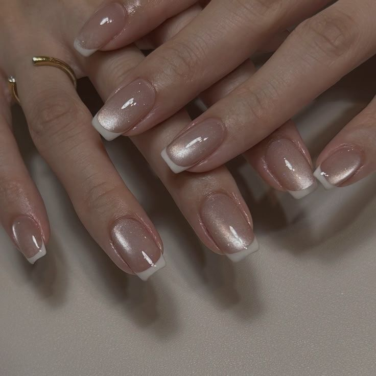
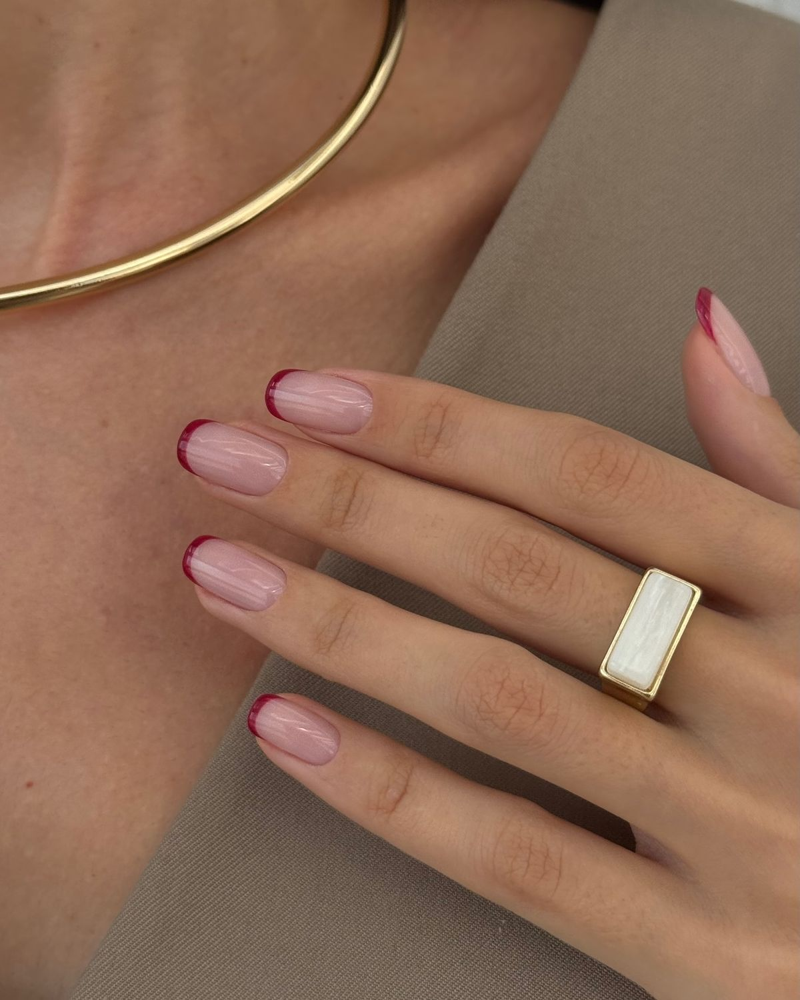
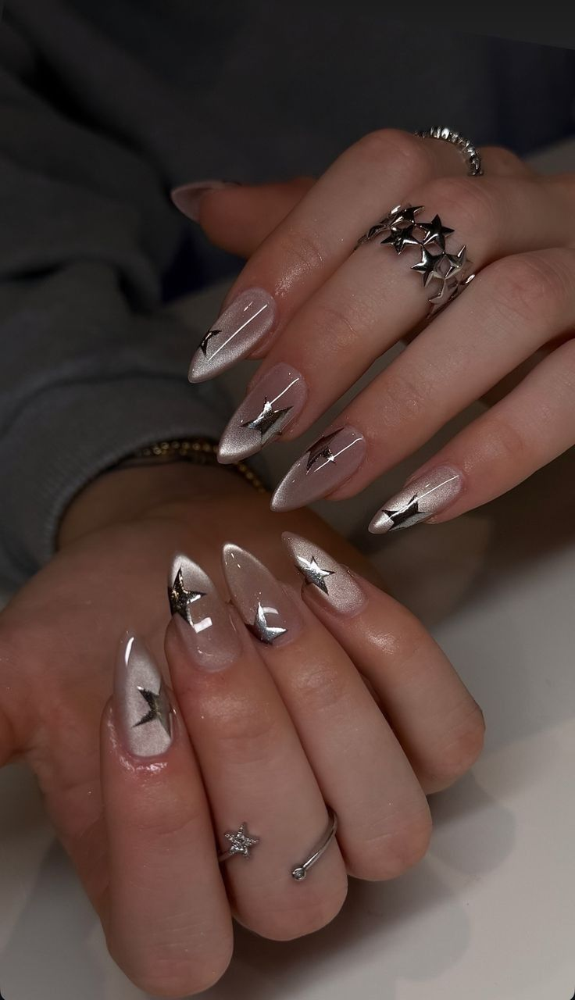
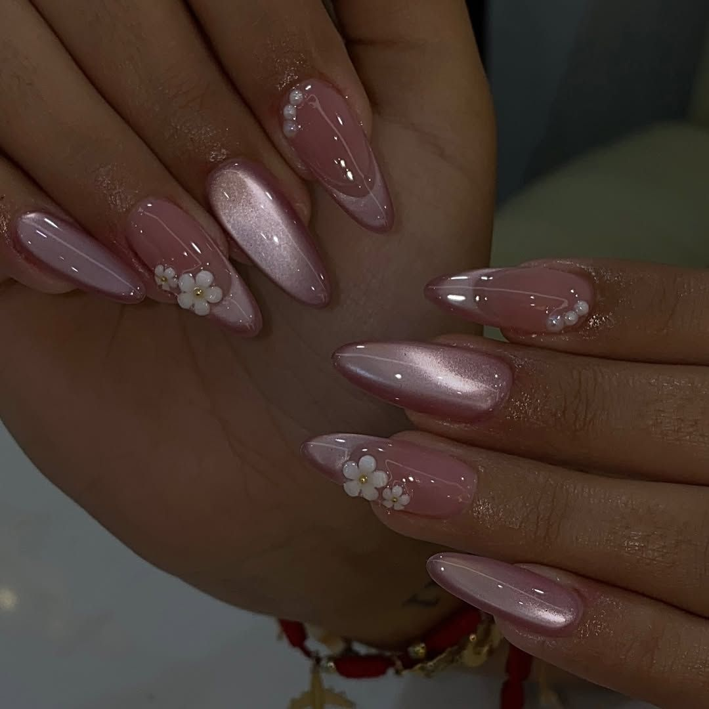
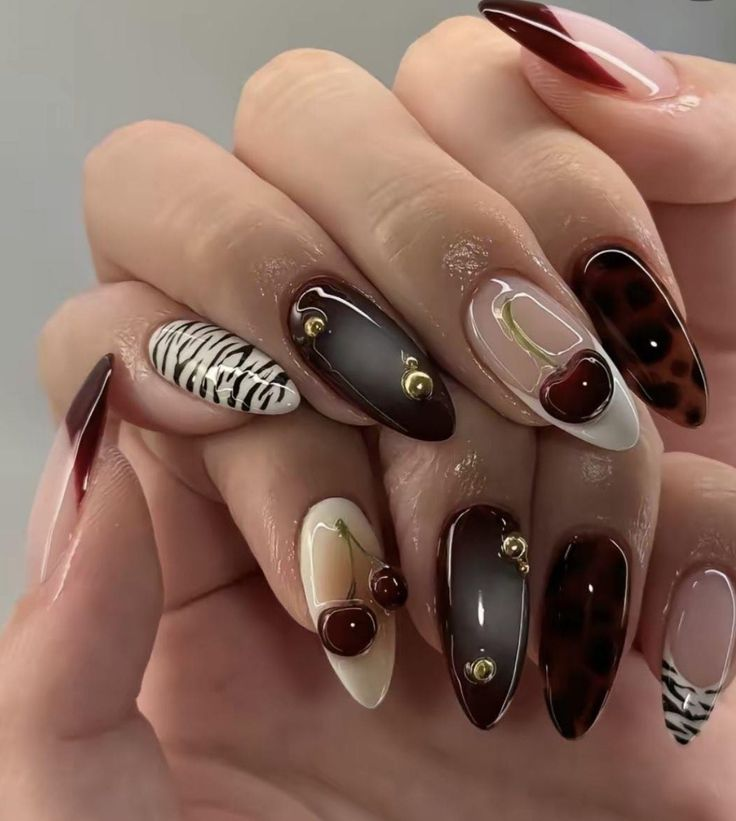

Este año las manicuras apuntan a acabados limpios, luminosos y muy ponibles.
Te mostramos nuestro Top 5 con descripciones generales de cada tendencia para que elijas
la que mejor va con tu estilo.
1
Base lechosa con brillo tipo glazed

La protagonista del 2025 es la uña de aspecto sano: capas finas en tonos lechosos o nude,
selladas con un top brillante que aporta efecto vidriado. Es versátil para todos los largos y formas,
combina con cualquier outfit y sirve como base para microdetalles sin perder elegancia.
2
Micro francesa (skinny french) de color

La francesa se estiliza: una línea muy delgada que puede ir en blanco, pasteles o colores vibrantes.
La clave es la precisión y el contraste sutil sobre bases claras. Es ideal para quienes buscan un toque
moderno sin salir de lo minimalista
3
Cromo perlado y metálicos suaves

Los metálicos siguen, pero más suaves: efectos perlados y cromos delicados que reflejan la luz sin
resultar estridentes. Funcionan solos o como acento en una o dos uñas, y elevan cualquier look con
muy poco mantenimiento.
4
Efecto jelly (translúcidos de color)

Tonos de “gelatina” que dejan ver la uña con un toque de color. Aportan frescura y ligereza, se adaptan
bien a uñas cortas y permiten superposiciones para subir o bajar la intensidad sin perder transparencia.
5
Aura suave y degradados difuminados

Degradados etéreos que nacen en el centro o desde la cutícula y se funden hacia los bordes. La paleta
va desde nudes cálidos a combinaciones pastel. Es una tendencia fotogénica que aporta dimensión sin
recargar.
Comentarios
Saray Tamara
05/10/2025
Me fascino el estilo con base cromo perlado, lo aplicare más a menudo.
Cristel Meléndez
05/10/2025
Muy buen artículo, me encantaron todos los diseños presentados, me gustaria poder aplicar alguno
en su salón un dia de estos.
Valery Chavarría
05/10/2025
Llevo un tiempo usando el diseño con efecto jelly, y debo decir que es muy acertado el hecho
de que tomen en cuenta dicho diseño y darle más visibilidad